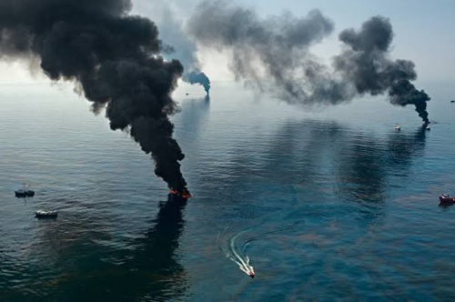

Efecto Invernadero Marino: La Alteración del Clima y el Futuro Global
El océano es el termostato del planeta, pero los derrames masivos de petróleo bloquean la interacción entre el agua y el aire. Esta capa de crudo altera la evaporación natural y el intercambio térmico, rompiendo el equilibrio de las corrientes marinas y los vientos, lo que intensifica fenómenos meteorológicos extremos en regiones muy alejadas del desastre.
Por otro lado, el petróleo daña gravemente al fitoplancton, reduciendo la capacidad del mar para absorber carbono y dejando millones de toneladas de CO₂ libres en la atmósfera. Además, la descomposición química de los hidrocarburos bajo el sol libera más gases de efecto invernadero, acelerando el calentamiento global y la acidificación del agua.